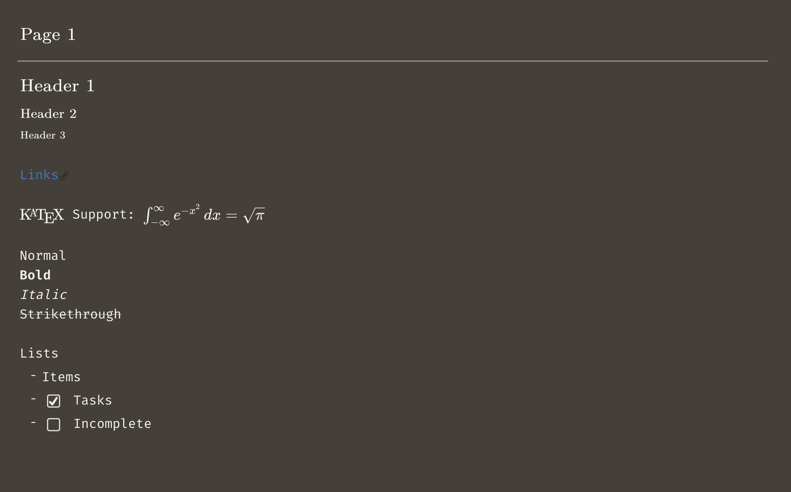
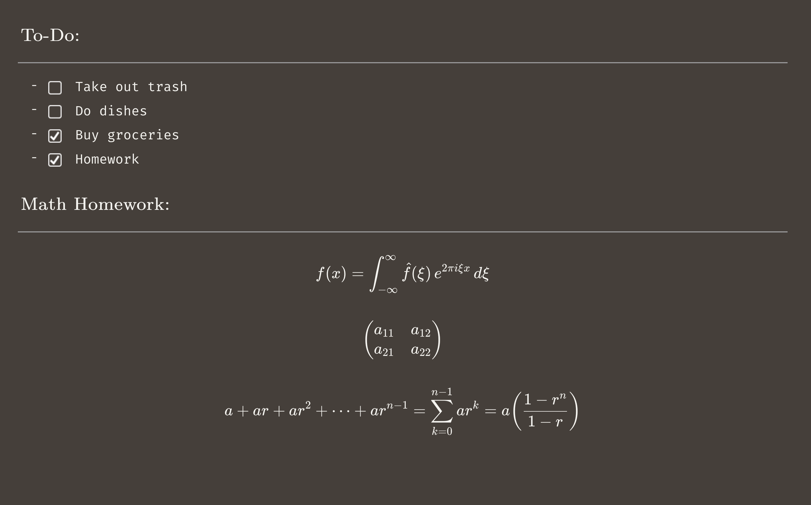
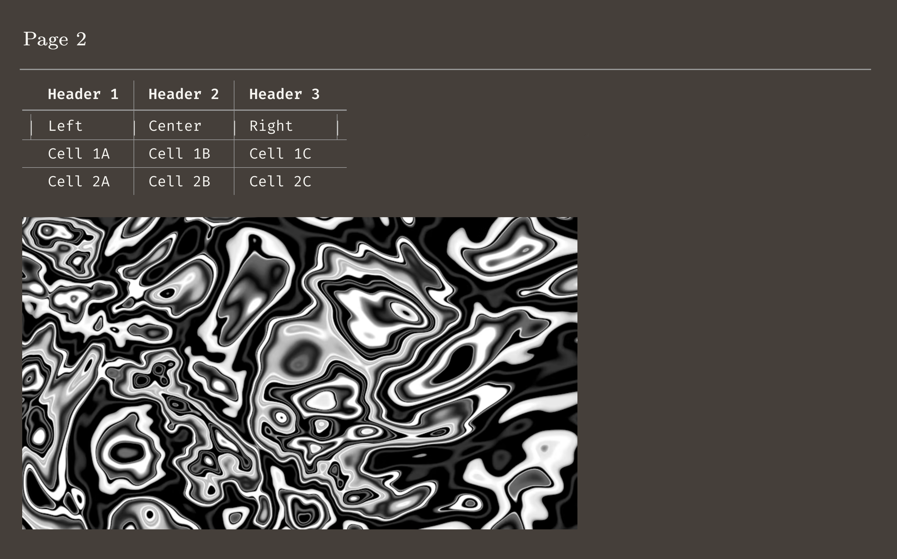

This project is a lightweight note-taking engine built on top of a markdown library. It supports live rendering, multiple editable pages, images, KaTeX rendering, tables, and automatic saving through localStorage.

I wanted to make a simple tool for writing down ideas without relying on a full markdown IDE. My goal was to support the core features I use most, quick formatting, math, images, and multiple pages.
I built the entire system myself, wiring together the markdown library, designing the layout, and implementing features like page management, and autosaving.


The engine started as a basic one-page textarea. I connected a markdown engine, I integrated KaTeX, added support for images and tables, and extended it to multiple pages.
IThe final tool is a compact, browser-based markdown journal with live formatting, math support, and persistent storage. It's simple, fast, and lightweight.